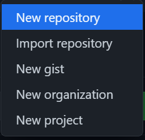
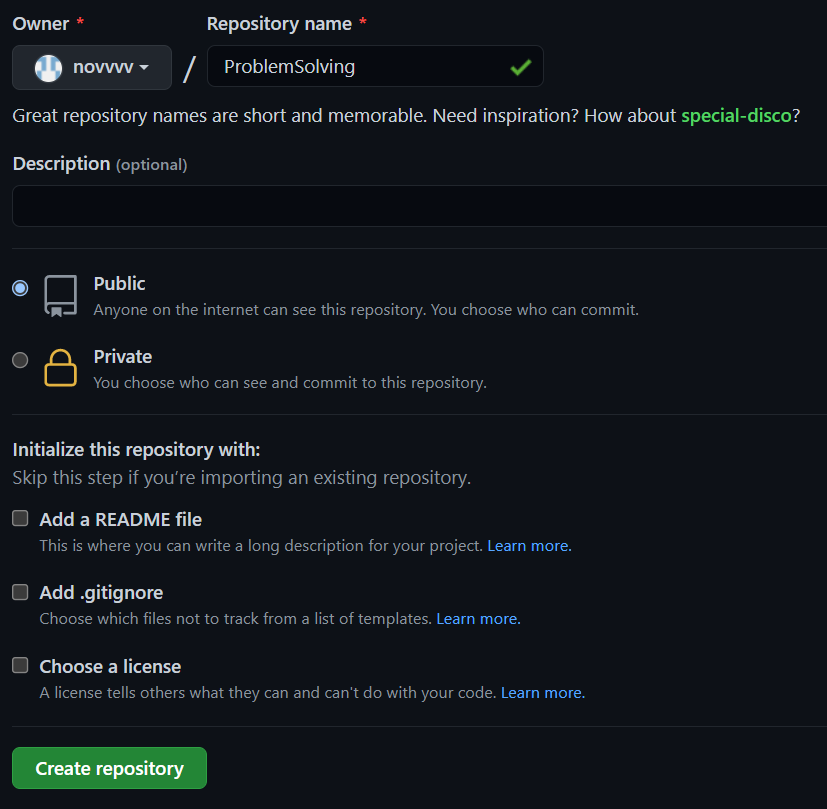
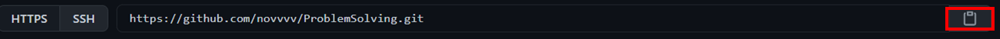
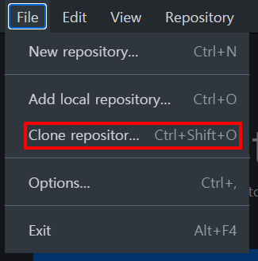
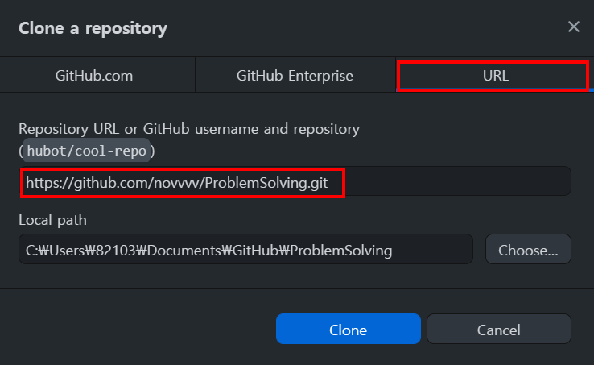
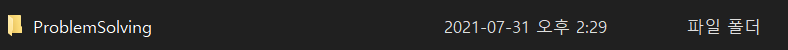
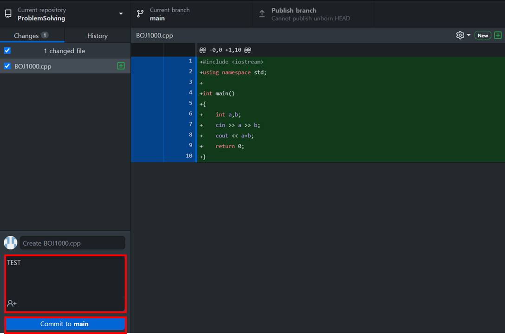
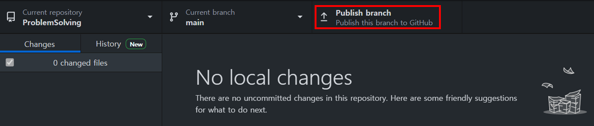
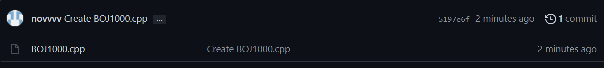

* 다음 포스팅은 깃허브(GitHub)의 사용방법에 대하여 정리한 것으로, 개인적인 공부 기록용으로 작성한 글 이기에 잘못된 내용을 포함하고 있을 수 있습니다.
[목차]
#준비물
#저장소 생성
#커밋&푸시
[목표]
깃허브와 깃데스크탑 GUI를 이용해 알고리즘 문제를 관리하는 방법에 대해서 알아본다.
#준비물
1. 깃허브 가입 : https://github.com/
2. 깃 데스크탑 설치 : https://desktop.github.com/
깃허브 계정이 없다면 깃허브 계정을 생성해 준 뒤, 깃 데스크탑을 설치해 준다. 용량은 대략 100Mb 정도이다.
#저장소 생성
깃허브 메인 프로필의 우측 상단에 있는 [+] 를 눌러서, [New repository]를 클릭한다.

저장소 이름과 공개 여부를 선택해 주고, [Create Repository] 클릭

만든 저장소로 들어가면 메인 화면에 저장소 주소가 나오는데 우측의 버튼을 클릭해 복사해 둔다.

다운 받아 두었던, 깃 데스크탑을 실행하여 [File] -> [Clone Repository] 혹은 단축키 Ctrl + Shift + O 를 누른다.

[URL] 탭에서 위에 복사한 주소를 붙여넣는다. Local Path 는 내 컴퓨터에 저장될 경로(지역저장소) 이다.
설정을 마쳤다면, [Clone]을 클릭한다.

#커밋&푸시
깃 데스크탑에서 Local path 로 설정한 경로로 가보면, 깃허브에서 생성한 ProblemSolving 폴더가 보인다.

테스트를 위해서 BOJ1000 A+B 문제 소스파일을 Problem Solving 파일에 넣어 보도록 하겠다.
물론, 넣었다고 해서 바로 깃허브 저장소에 적용되는건 아니고, 깃 데스크탑에서 커밋&푸시를 해야 깃허브 저장소에 올라간다.
깃 데스크탑을 켜보면 수정 혹은 추가된 파일이 목록에 추가된다.
커밋메시지를 적어주고, [Commit to main] 을 클릭한다.

커밋을 완료했다면, 상단의 [Publish branch]를 클릭해서 푸시까지 완료해 주자.

다시 깃허브 저장소로 돌아가서 새로고침 해보면, 방금 푸시한 소스코드(BOJ1000.cpp)를 확인 가능하다. 파일 형식은 .java .txt 상관없이 모두 가능하다.
